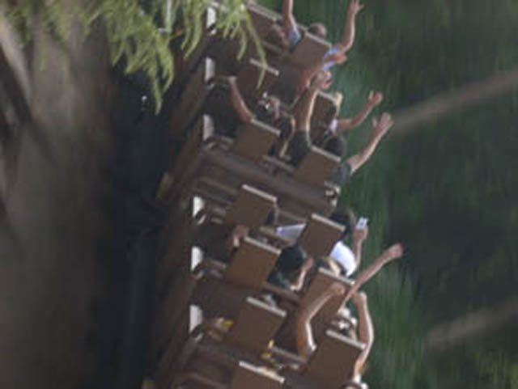

| |
Expedition Everest Review

Today, we'll be reviewing Expedition Everest at the Walt Disney World Resort for you. When walking around Animal Kingdom, you just see a huge Expedition Everest, a lifthill going into the mountain, and a drop down the mountain. Knowing that this looks like a kickass ride. So we head in line, get in the train, and away we go!!! We coast on the ground for a little bit before heading into the first lifthill. Now this isn't the giant lifthill you rushed out to climb, this is just a small puny little lifthill. So we're thinking "What is this ride and where is the Giant Lifthill?" You then turn around and head down a tiny drop that gains us a little bit of speed. We then turnaround and see the giant lifthill in all it's glory. At first you hear the typical Anti Roll Backs, but then you hear Mt Everest Music instead of the klank klank klank of a traditional lifthill. We quickly make it to the top turn into the artificial ice. We go through an ice tunnel with some fog, and then we see that the track has been ripped apart. Luckily, we stop before we can fly off the chewed up track. A wide range of thoughts go through our heads like "Where the hell is that stupid drop I saw earlier!!!" We then see that the track has been chewed up which makes us realize, we can never get to the drop because the Yeti chewed up the track leading to it. Then we realize "Oh Sh*t! He's gonna get us next!!!" So to avoid the yeti, we fall backwards and do a bunch of crazy stuff in the dark. This is personally my favorite part of the ride as it is very disorienting to be doing weird stuff in the dark. We then reach a brake run. We then see the silouette of some track and the yeti. We see that the Yeti rips up the track and swings away as we begin to move foreward again. We then dip up through some fog until we then head down THE DROP!!! It's not nearly as intense as we thought it would be, but it's still a lot of fun!! We then twist up back into the Mountain. We are then greeted with another drop in the dark before heading outside to go through a double fake helix of death. It may not be the most powerful fake helix of death, but it sure is a lot of fun. We then head back into the mountain where we then see "THE YETI!!!!!!" Unfortunetly, my camera never picked up the Yeti, but I remember him being really big! We then head straight into the brake run and glide right back to the station. While I know many people have been complaining that the yeti hasn't been working, Yeti or no Yeti, Expedition Everest is a kickass ride that can not be missed if at the Walt Disney World Resort.
8/10
Location: Walt Disney World Resort
Opened: 2006
Built by: Vekoma
Last Ridden: November 23, 2007
Expedition Everest Photos



Home
|